El expediente que nunca debió llegar a vosotros
Encontráis un sobre bajo la puerta. No tiene remitente. Dentro hay una fotografía, una llave con el número 47 y una nota.
«Si estáis leyendo esto, ya es demasiado tarde para mí.
La policía cerró el caso Vega hace seis meses. Dicen que fue un robo. Mienten.
Hay cuatro personas que saben qué ocurrió. Una de ellas está mintiendo. Y alguien ha hecho todo lo posible para que la prueba desaparezca.
No confiéis en la versión oficial.
— A.
J.F. / I.M.
JFB
«Te quiero igual»
«Tomé café»
Archivo fotográfico
Este archivo se actualiza a medida que avanzáis. Volved aquí cuando necesitéis examinar una prueba con más calma.

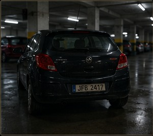
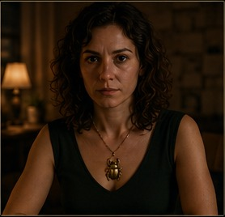
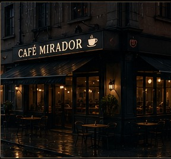
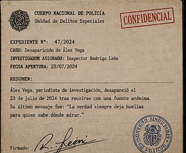
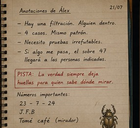
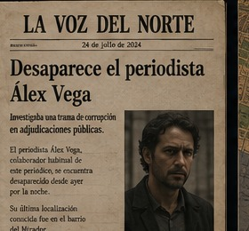
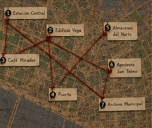
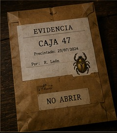
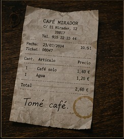
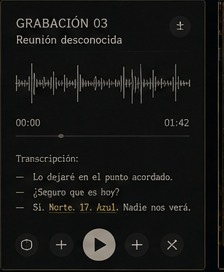
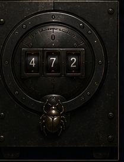
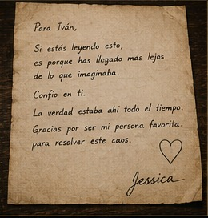
La fotografía de Álex
El informe afirma que el reloj fue encontrado detenido a las 20:51. La fotografía demuestra otra cosa.
20:51 — Álex compra café.
21:03 — entra en el edificio.
21:17 — vecino escucha un golpe.
«La verdad siempre deja huellas para quien sabe dónde mirar.»
17 / 21 / 20 / 1 / 14 / 15
Ordenad los números como hora del reloj → hora de entrada → compra de café y convertid la diferencia entre cada pareja a letras (A=1).
Todos tienen algo que ocultar
Clara Vidal
Abogada de Álex. Asegura haber hablado con él a las 21:20.
Registro: no existe ninguna llamada a esa hora.
Bruno Salas
Periodista. Antiguo compañero de Álex.
En su ordenador: VEGA_47_FINAL.docx
Marta Ruiz
Vecina del edificio. Dice haber visto salir a un hombre a las 21:30.
Lleva un collar con un escarabajo dorado.
Diego León
Dueño del Café Mirador. Coartada: 21:10–22:00.
Matrícula de su coche: JFB.
| Registro | Hora | Dato |
|---|---|---|
| Entrada edificio | 21:03 | Álex entra |
| Última llamada | 20:42 | 17 segundos |
| Declaración Clara | 21:20 | «Hablé con Álex» |
| Recibo Café Mirador | 21:32 | 2 cafés + 1 agua |
¿Quién miente sobre haber hablado con Álex?
Cuatro casos, un patrón
Hay cuatro recortes. Las fechas parecen decorativas. No lo son.
22/03/24 · EL DIARIO
Empresario hallado muerto en extrañas circunstancias.
Acceso previo a información policial.
15/05/24 · LA VOZ
Robo de documentos confidenciales en el puerto.
Sin forzar cerraduras.
23/07/24 · LA TRIBUNA
Desaparición del periodista Álex Vega.
Expediente 47.
02/09/24 · EL NORTE
Nuevo caso de filtración de información policial.
Fuente anónima.
Busca qué número comparten las fechas al separar DÍA / MES / AÑO.
El número que necesitáis es el día de la fecha de Álex. Combinadlo con la matrícula encontrada en el expediente de Diego. JFB no es una matrícula: es un desplazamiento.
Donde terminan las vías
La grabadora recuperada contiene una frase:
«Buscad el lugar donde la ciudad termina pero las vías continúan. Norte. 17. Azul.»
Pista: el lugar correcto tiene vías y está en el extremo norte del mapa. El número 17 aparece en la nota de Álex.
La canción en el recibo
En el Café Mirador aparece un recibo con una anotación:
2 cafés · 1 agua · 1 llamada desde cabina
TOMÉ CAFÉ
JFB · 23/07/24 · 21:32
Álex dejó una instrucción: «La primera letra de cada palabra que tomo.»
Tomad la primera letra de las palabras TOMÉ CAFÉ, después usad JFB como desplazamiento -1, -2, -3.
¿Qué palabra de tres letras obtenéis?
La llave abre algo más que una puerta
La caja tiene tres ruedas. La nota dice:
SEGUNDA RUEDA: el número que aparece donde nadie mira.
TERCERA RUEDA: la persona que lleva el símbolo.
Ya conocéis:
- 23/07/24 → 23
- 17 → reloj
- escarabajo dorado → Marta
Convertid MARTA a números con A=1 y sumad las cifras hasta obtener un solo dígito.
La persona que nunca desapareció
Dentro de la caja hay una carta.
«No busquéis a quien me hizo desaparecer.
Buscad a quien necesitaba que yo desapareciera.
La ventana, el reloj y la llamada fueron una mentira. La persona del escarabajo ayudó a construirla.
El hombre de la matrícula JFB no era el culpable. Y Clara mintió para protegerme.
El verdadero responsable tenía acceso a los expedientes antes de que fueran públicos.
Su firma aparece en todos los casos.
— Álex»
Revisad los documentos. El nombre que aparece como responsable oficial de los cuatro expedientes es:
Pero falta una última prueba. Introducid la frase personal que Álex escondió en el expediente.